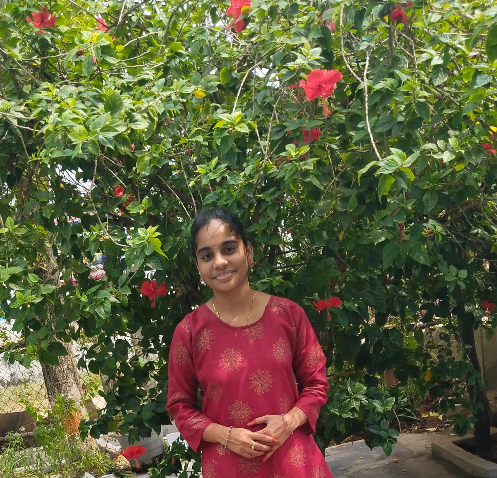

Hello,I'm Srujana Goli.
AN ASPIRING CSE ENGINEER
Seeking for the opportunity to enhance my skills & knowledge.
and utilizing them for personal & organizational growth.
Hire Me

SKILLS
Technical knowledge in programming languages like c,java,python.
Good understanding of object-oriented-concepts.
Basics in html,css,sql,dbms.
PROJECTS
1.Conversion of text-speech using python modules.
The main objective of this project is python mainly
focuses on ability of a computer to produce spoken words
by converting text to voice.
Here gTTS,Tkinter,playsound modules are used to implement this project.
2.Employee Stress Detection Using SVM,Randomforest Algorithms
This project is to reduce the amount of the stress faced by the employees
in various sectors by taking the views
of the employees
who are shared in their twitter social media platform.
1.Random Forest Algorithm: it selects random values from the tweets datasets and start looking for the class
2.SVM:it creates a hyperplane which separate the data into classes